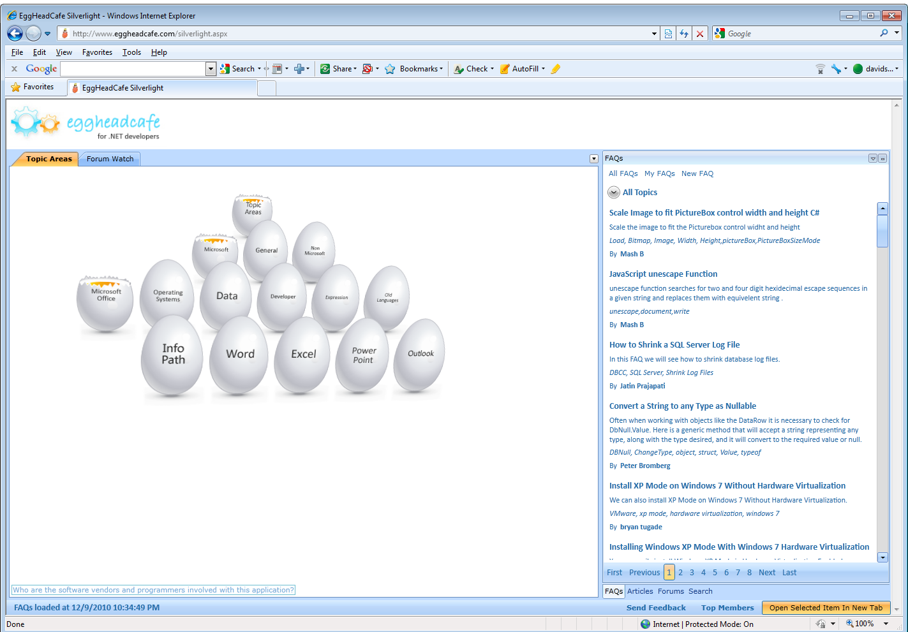
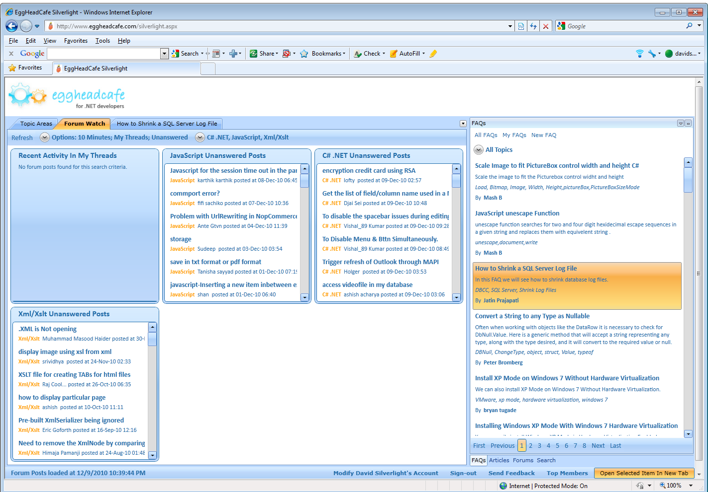
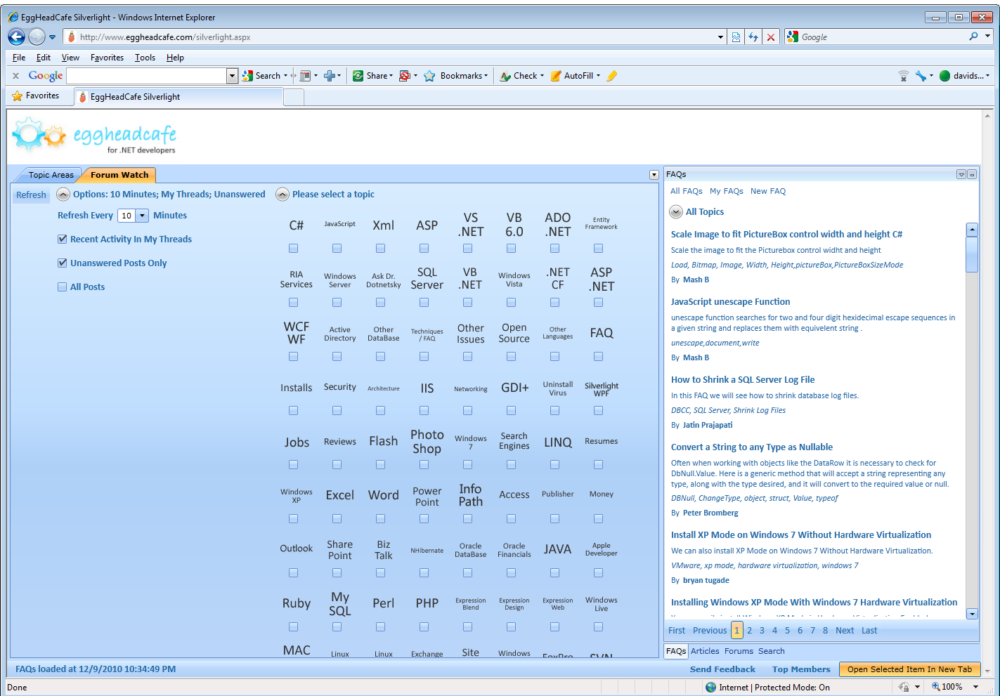

A unique, immersive interface for the Silverlight edition of EggheadCafe.com — a popular developer community — where I built a fresh navigation system and reimagined the Forum experience.
EggheadCafe wanted a Silverlight experience that felt more immersive and interactive than a typical web page. My work centered on how people moved through the site and how they engaged in the forums.
Designed and developed the navigation for the Silverlight version of the site — fluid, interactive and distinctly un-webpage-like.
Reimagined the user interface for the Forum section, a core part of the EggheadCafe community.
Leaned into Silverlight's strengths to deliver a richer, more engaging experience for visitors.
The interface was well received — even referenced and linked from the bottom of the EggheadCafe website.
The Silverlight experience reimagined how developers browsed the site — starting with a playful, interactive "egghead" navigation. Click any screen to enlarge.



Web design and web development for a high-traffic developer community's Silverlight experience.